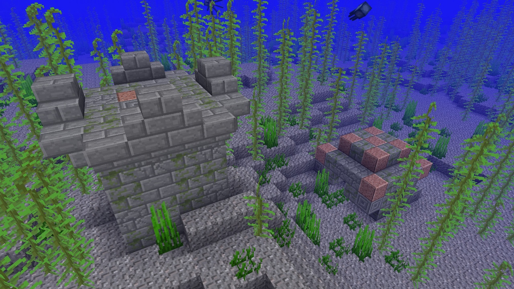
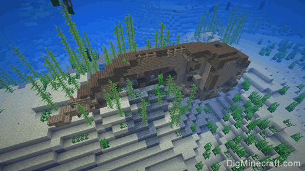
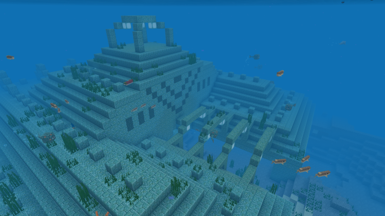
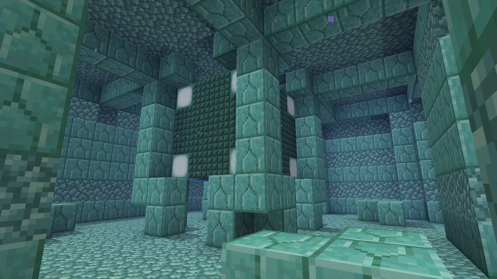

The Ocean
Ocean Ruins
These sunken cities imply that perhaps the world had flooded at some point. They are fully submerged and loot can be found in them
Shipreck
Shipwrecks are found at the botton of the ocean with loot in them. We don't know who built them.
Ocean Monument
Ocean Monuments are inhabited by guardians and elder guardians. They are the only place where sponges can be found and one of the two places where prismarine can be found; the other being ocean ruins
These might once have been worshipping centers considering the ocean ruins of cities that are also on the bottom of the ocean.
